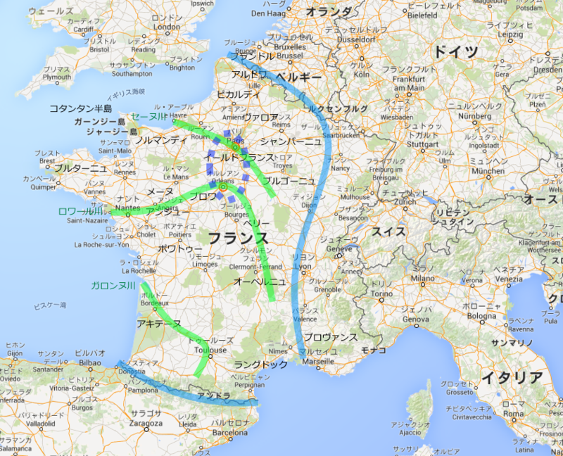

『カペー朝 フランス王朝史１』
執筆日時：
")
- 作者: 佐藤賢一
- 出版社/メーカー: 講談社
- 発売日: 2013/06/28
- メディア: Kindle版
- この商品を含むブログを見る
小説フランス革命シリーズを読んでいて、“市民ルイ・カペー”が断頭台の露と消えたところだけど、それはちょっと脇に置いて、こっちを先に読むことにした。ざっとしたカペー朝の概略史。
筆者独特のスピード感ある筆致に自分がついていけないのは、きっと地理を把握できていないからだろうと思い、Google Map に自分なりに書き込んでみた。

青い太線で囲まれているのが、当時の“フランス”の領域（だいたい）。ピレネー山脈とかは当たり前の地理知識として、加えてセーヌ・ロワール・ガロンヌの三大河川も押さえておきたいところ。このうち、セーヌ川（パリ）とロワール川（オルレアン）の間を治める「セーヌ・ロワール両河間における公」として、カペー家は出発（点線で囲った部分）。この所領の小ささでもわかるように、王家を簒奪したものの、カペー家がほんとうに王としてフランスに君臨するまでには、長い時間を要した。
ユーグ・カペーが王の名を、
フィリップ二世が王の実を、
ルイ九世が王の品格を。
それにしても、なんちゃら公とか、どこどこ伯とかいう名前の多いこと多いこと。試しにちょっと抜き書きしてみた。
- ヴォルムス伯
- トゥール伯
- アンジェの伯
- パリ伯
- アンジュー伯
- ブロワ伯
- フランドル伯
- トゥールーズ伯
- バルセロナ伯
- アルル伯
- ヴェクサン伯
- エヴリュー伯
- ヴェルマンドワ伯
- シャンパーニュ伯
- オーヴェルニュ伯
- ブーローニュ伯
- エデッサ伯
- トリポリ伯
- ナント伯
- ドルー伯
- サンセール伯
- エノー伯
- ブルターニュ伯
- モルテン伯
- ブーローニュ伯
- アングレーム伯
- リモージュ副伯
- ラ・マルシュ伯
- オーセール伯
- ソワソン伯
- サン・ポル伯
- ギーヌ伯
- バール伯
- ムラン副伯
- ソールズベリ伯
- フォア伯
- カルカソンヌとベジエの副伯
- ラ・マルシェ伯
- プロヴァンス伯
- フォルカルキエ伯
- ルクセンブルク伯（14世紀に公へ昇格）
- レスター伯
- ヌヴェール伯
- アランソン伯
- ポワティエ伯
- ブリィ伯
- ポンテュー伯
- ブルゴーニュ公
- ノルマンディ公
- フランク人たちの公（これはちょっと意味合いが違うかも）
- 低ロレーヌ公
- アキテーヌ公（イングランド王が兼ねる）
- 高ロレーヌ公
- キエフ大公
- ブラバント公
- アンティオキア公
56もあった。まぁ、フランス国外の領主も含まれているけれど、これにナバラ（ナヴァール、要するにスペインの一部）王とか、ボヘミア王とか、もちろんドイツの神聖ローマ皇帝や教皇なんかもいる。ぶひぃ。こいつらが戦争したり、婚姻したりで領地を取ったり取られたりするのだから、そりゃややこしくなろうもんだ。
とくに、イングランド王の扱いはめんどくさい。フランスではノルマンディ公やアキテーヌ公としてフランス王に忠誠を誓いながら、それでいてイングランド王としてはフランス王とほとんど同格に立場にある（権威的にはフランス王の方が上だが、フランスでの領地に限ってもイングランド王のほうがたくさん持ってたりするからややこしい）。しかも、二重三重に婚姻関係を結んでいて、片方の男子血統が途絶えると「俺にも相続権がある！」といちゃもんをつける。もうめちゃくちゃだなー。
でも、完ぺきではないながら、だいたいの地名はわかったので、だいぶ理解が進んだ。おっけおっけ。
あと、本書は基本的に人名がフランス語読みなので注意かも。シャルル・ダンジューは“アンジュー伯シャルル（Charles d'Anjou）”だし、プランタジュネ家のジャンは、要するにプランタジネット朝イングランドのジョン欠地王のことだ。この辺りは慣れてないとちょっと詰まるかもしれない（だるやなぎさんは腐ってもフランス語選択だから大丈夫）。教科書でよく使う事件の名前もあまり本書では用いられていないので、「あぁ、あのことか」と頭の中で一致させるのに少し時間がかかったりした。